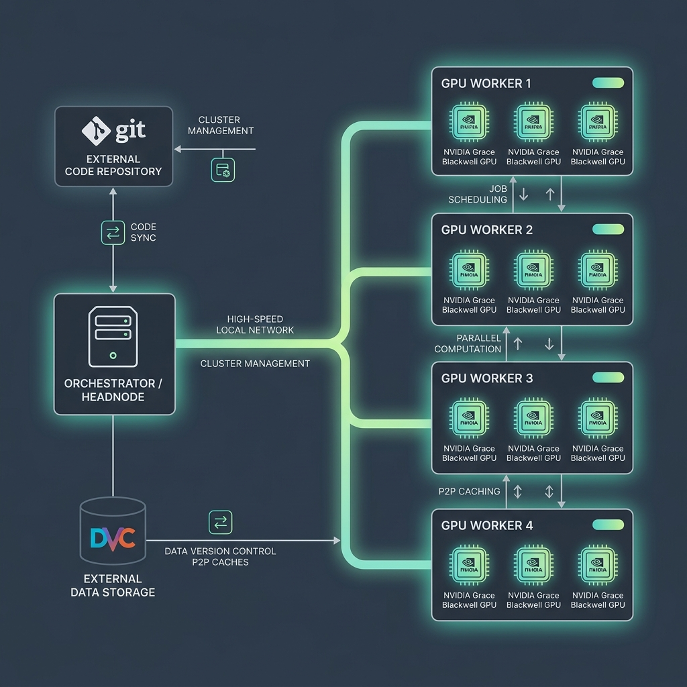
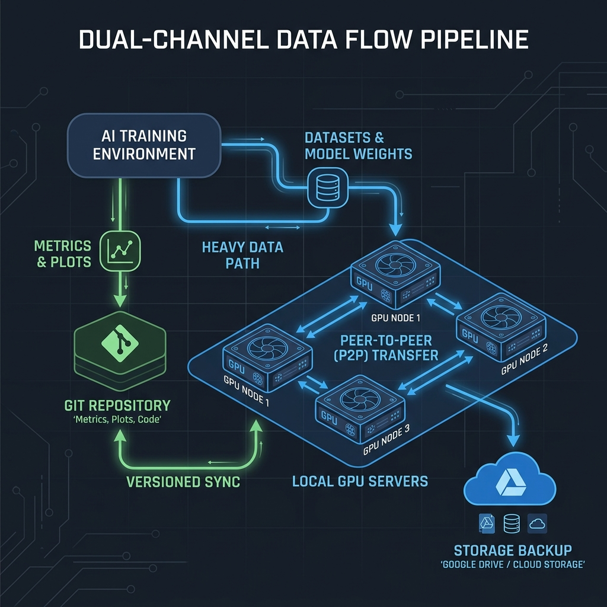

Infrastructure Internals
This document provides detailed technical documentation on the internal mechanisms of the Cluster-CI platform. These details are intended for platform administrators and developers who need to understand, maintain, or debug the underlying systems. Researchers do not need to read this document to use the cluster.
Architecture Overview
Below is the high-level technical architecture of the Cluster-CI platform showing the interaction between the headnode, the workers, GitHub Actions, and the remote storages.

1. Garbage Collection
The cluster implements a multi-tiered garbage collection system to manage disk space on worker nodes. The primary orchestrator is src/runner/gc_orchestrator.py.
Just-In-Time (JIT) Tiered LRU Garbage Collection
To prevent worker hard drives from filling up, the runner executes a JIT cleanup routine managed by gc_orchestrator.py before and after each job run.
- Safety Threshold: The safety threshold is set to 100 GB (configured via
GC_FREE_SPACE_THRESHOLD_GBon the worker host). - LRU Registry: The system maintains a metadata registry (
repositories/registry.json) tracking project usage (active/idle status, last execution timestamp, and disk size). - Trigger: If the free space on the partition drops below 100 GB when starting a job, the GC selects the oldest
idlerepositories and applies a 5-level progressive purge (Least Recently Used first) until the threshold is restored.
Progressive Cleanup Levels
The garbage collector frees space in five progressive steps:
| Level | Target | Action & Recovery |
|---|---|---|
| Level 1 | DVC History Purge | Purges historical DVC files in the local cache, preserving only the last 2 commits of the repository. |
| Level 2 | Large Untracked Files | Force-deletes any untracked or ignored files in the workspace that are larger than 500 MB. |
| Level 3 | Docker Dependency Volume | Deletes the project-specific Docker volume (cluster-ci-home-<owner-repo>), clearing cached uv and pip installations. They will be re-downloaded/reinstalled during the next run. |
| Level 4 | Local DVC Cache Wipe | Wipes the entire local .dvc/cache directory. Before wiping, the GC pushes dirty/idle caches to the central backup (Google Drive). The next run will pull them back over the LAN or GDrive. |
| Level 5 | Full Repository Wipe | Deletes the entire repository directory (repositories/<owner-repo>) from the worker. |
Active repositories currently running jobs are never targeted by the GC.
Emergency Garbage Collection (50 GB Threshold)
The worker node implements an automatic, destructive Emergency Garbage Collection loop within src/runner/gc_orchestrator.py designed to prevent disk space exhaustion.
- Triggering and Panic Threshold: The emergency GC is launched via
run_gc(). It checks the free space of the storage partition where repositories reside (derived usingshutil.disk_usage). The panic threshold is set to a hardcoded limit of 50 GB (PANIC_THRESHOLD_GB = 50). - Resource Pruning: Before deleting workspace directories, the script executes a general Docker system cleanup by calling
docker system prune -fto reclaim space from dangling images, unused networks, and stopped containers. - Workspace Eviction Strategy (FIFO/LRU): If the storage space remains below 50 GB after the Docker prune, the script parses the
registry.jsondatabase. It filters out all projects marked asstatus: "idle". It then sorts these idle projects chronologically by theirlast_executiontimestamp, placing the least recently used (LRU) project at the front. - Destructive Cleanup: For each candidate project, the GC invokes
cleanup_level_5(project_path, project_name), which executes a recursive directory deletion viashutil.rmtree(project_path). No remote backups or DVC pushes are executed during this emergency routine. - Termination Condition: The deletion loop stops immediately once the available disk space climbs back above the 50 GB limit. The database
registry.jsonis updated, writingstatus: "deleted"andsize_bytes: 0for all evicted projects.
Lazy Workspace Transfer (sync_status)
For standard maintenance, src/runner/gc_orchestrator.py implements a Lazy Workspace Transfer routine through run_transfer_gc() to offload older workspace folders.
- Threshold and Scan: Triggered when the worker's free disk space drops below
FREE_SPACE_THRESHOLD_GB(defaults to 100 GB, configurable via theGC_FREE_SPACE_THRESHOLD_GBenvironment variable). The orchestrator identifies candidate projects marked as"idle". - DVC Remote Verification: The worker inspects the workspace configuration at
.dvc/config. If a remote is configured (determined by searching for theremote =string), the project cannot be deleted without pushing its data. - Headnode Query & Push: The worker queries the central headnode API endpoint (
HEADNODE_URL/check_space) to check if the remote repository has sufficient storage capacity. If the headnode is available and has enough space, the worker executes a localdvc pushinside the project path. - Eviction & Sync Status Update:
- If the
dvc pushsucceeds, the project is evicted from the worker viacleanup_level_5(workspace directory deleted). The project status inregistry.jsonis set to"deleted", its size is set to0, and itssync_statusis updated to"done". - If the headnode is unreachable, full, or if the
dvc pushfails, the local workspace deletion is deferred. The project'ssync_statusis set to"pending"in the registry, ensuring it is kept locally until the next maintenance pass. - If the workspace has no DVC remote configured, it is directly evicted and marked as
status: "deleted"andsync_status: "done".
- If the
2. Historical DVC Visualizer
The historical visualizer allows researchers to view pipeline DAGs, metrics, and plots for older revisions without interfering with the active workspace. It utilizes isolated Git worktrees and cached symlinks.
- Git Worktree Isolation: When a historical view request is sent to the headnode for a repository at a specific commit revision, the worker API endpoint
/api/worker/dvc-viewer/start(insrc/scheduler/worker_agent.py) is invoked. It creates a deterministic directory in/tmp/dvc-viewer-<repo>-<rev_short>and executes:git worktree add --detach <worktree_dir> <target_rev>This checks out the specified commit in an isolated directory without affecting the worker's main branch workspace. - Local DVC Cache Symlinking: To avoid time-consuming network pulls, the worker creates a
.dvcfolder inside the newly created worktree, symlinks the main repository's DVC cache (repo_path/.dvc/cache->worktree_dir/.dvc/cache) and copies theconfigandconfig.localconfiguration files. It then runs:dvc checkoutThis restores all heavy outputs instantly from the shared local DVC cache, without making network requests. - Inactivity Heartbeats: The
dvc-viewerserver (launched indvc_viewer/server.py) spawns a background thread named_inactivity_daemon. This daemon monitors server activity. If no client requests hit the/api/heartbeatendpoint for 15 consecutive seconds, the server self-destructs by callingos._exit(0). While the user's browser is active, it pings the proxy on the headnode every 5 seconds, which forwards the heartbeat to the worker to keep the instance alive. - Headnode Cleaning Task: In
src/scheduler/headnode_service.py, a background threadcleanup_inactive_viewers()runs every 30 seconds:- For local viewers: if the last access exceeds
DVC_VIEWER_TIMEOUT_MIN(defaults to 30 minutes), it terminates the process (proc.terminate()). - For remote worker viewers: if the last access is older than 45 seconds (since the worker itself terminates after 15 seconds of inactivity), the headnode prunes the metadata registration entry.
- For local viewers: if the last access exceeds
3. Container Hardening
The src/runner/smart_install.sh script implements several protective mechanisms to ensure that the NVIDIA NGC container runtime remains stable despite user dependency installations.
NGC Library Shadowing Protection
NVIDIA NGC containers contain highly-optimized, hardware-accelerated builds of libraries (e.g. torch, triton, vllm, nvidia-*) pre-installed in system directories (such as /usr/local/lib/python3.12/dist-packages/).
- The Shadowing Problem: When running local pip/uv installations (e.g.,
pip install -e .with local prefixes or user directories), transitive dependencies can pull standard public PyPI packages into/home/user/.local/lib/python3.12/site-packages/. Since Python prioritizes local paths over system paths, these generic PyPI packages shadow the optimized NGC builds, causing massive performance drops or CUDA crashes. - Protection Mechanism: To prevent this library shadowing,
smart_install.shexecutes a post-install hook that scans all Python site-packages and dist-packages paths under the user's home folder (/home/user/.local/...,/workspace/.venv/..., etc.) and forcibly removes (rm -rf) any directory matching:torch,torch-*,torchvision,torchvision-*,nvidia*,nvshmem*,triton*,xformers*, andvllm*. This ensures the Python runtime always falls back to the vendor-optimized system libraries provided in the NGC container.
vLLM NVSHMEM Stub Symlinking
When compiling or launching vLLM in multi-GPU clusters, the build searches for the NVSHMEM communication library (libnvshmem.so).
- Single-GPU Worker Absence: On single-GPU worker nodes, the NVSHMEM runtime is typically absent, which causes vLLM startup to fail with library loading errors.
- Stub Symlink Fix: During the dependency setup phase,
smart_install.shuses a Python script to locate the active PyTorch library directory (torch/lib) and automatically symlinks the NVIDIA CUDA stub:ln -sf /usr/local/cuda/lib64/stubs/libnvshmem.so <torch_lib_path>/libnvshmem.soThis provides vLLM with the required interface definitions, preventing initialization errors on single-GPU nodes.
bitsandbytes CUDA Compatibility Patch
The bitsandbytes quantization package loads pre-compiled CUDA backend libraries (e.g., libbitsandbytes_cuda120.so).
- Compatibility Barrier: When running on cutting-edge platforms like Grace Blackwell (GB10) with newer CUDA drivers (e.g., CUDA 13.2),
bitsandbytesfails because it does not ship with a matching pre-compiled library for that major/minor version. - Dynamic Patching:
smart_install.shdetects the system CUDA version vianvcc --version(e.g.132for13.2), and scans thebitsandbytessite-packages directory to locate the highest pre-compiled.sofile available (e.g.libbitsandbytes_cuda126.sofor12.6). If the host CUDA version exceeds the highest pre-compiled version and the corresponding.sois missing, it dynamically symlinks:ln -s libbitsandbytes_cuda126.so libbitsandbytes_cuda132.soThis forcesbitsandbytesto load and run using the latest compatible CUDA library.
4. Runtime Watchdogs
The cluster employs several watchdog processes to ensure job stability and prevent resource exhaustion.
Double-Threshold GPU Memory Guard & Host Watchdog
To prevent jobs from freezing the operating system or starving other tasks on unified memory platforms, cluster-ci implements a double-threshold memory protection system.
- Process-Level CUDA Hard-Cap: The script
src/runner/gpu_memory_guard.pyis injected into the container'sPYTHONSTARTUPenvironment variable. Before user code executes, it checksCLUSTER_CI_VRAM_LIMIT_GB. If set, it calculates the VRAM fraction and hard-caps PyTorch's memory allocation via:torch.cuda.set_per_process_memory_fraction(fraction, device=0) - Unified Memory (Grace Blackwell) Fallback: On unified systems (e.g. Grace Blackwell GB10), standard CUDA device queries for total memory return
0or[N/A]. The guard detects this and falls back to reading system RAM from/proc/meminfo(MemTotal:), which serves as the shared CPU-GPU pool. - Host-Level Dual Threshold Watchdog: The host script
src/runner/gpu_watchdog.shmonitors the running container every 2 seconds:- Discrete GPU Mode: Queries
nvidia-smi --query-gpu=memory.used. - Unified Memory Mode: Fallback to
/proc/meminfo(MemTotal - MemAvailable). - Soft VRAM Threshold (User-declared): If memory exceeds this limit, it flags a violation. If the violation persists for
SOFT_THRESHOLD = 2consecutive checks (4 seconds grace period), the watchdog kills the container (docker kill). - Hard RAM Threshold (90% System RAM): If memory usage exceeds 90% of total system RAM, the watchdog immediately kills the container on the very first check to protect the host OS from kernel panic/OOM lockups.
- Discrete GPU Mode: Queries
Zombie GC (Multi-dimensional Inactivity)
To prevent orphaned or stuck container processes from indefinitely consuming cluster resources, src/runner/gc_orchestrator.py runs a Zombie Garbage Collection daemon via run_zombie_gc().
- Container Filtering: The GC scans for running Docker containers matching the name pattern
cluster-job-*. - Multi-Dimensional Inactivity Check: For each container, it evaluates activity across three dimensions:
- Logs: Checks the modification timestamp (
st_mtime) ofjob_logs/{job_id}.log. If the log file has not been modified since the last check, it counts as inactive. - CPU & Network: Queries
docker statsfor CPU percentage and network IO bytes. If CPU usage is<= 0.1%and network traffic is identical to the previous check, it counts as inactive. - GPU Utilization: Runs
nvidia-smito verify if the sum of GPU utilization percentages is0%.
- Logs: Checks the modification timestamp (
- 10-Minute Timeout Termination: If inactivity is detected across all three dimensions, a persistent timer is incremented in
zombie_registry.json. If this inactivity exceedsZOMBIE_TIMEOUT_MINUTES = 10minutes, the container is forcibly removed (docker rm -f), and any associated viewer containers or hostdvc-viewerprocesses are killed.
DVC Git Watchdog (Incremental Backups)
The cluster implements an asynchronous watchdog (src/runner/dvc_watchdog.sh) to perform intermediate Git commits of metrics and plots during long-running training stages.
- Lock File Monitoring: The watchdog runs as a host-level background daemon, polling the project's
dvc.lockfile every 2 seconds. - DVC Status Interlocking: When
dvc.lockis modified, the script waits 2 seconds for disk writes to settle. It inspects.dvc/tmp/iterative-status.json. If the JSON file reportsrunning: true, it defers the synchronization to prevent file locking conflicts. - Intermediate Commits: If no stage is actively writing, it executes
dvc_git_helper.py syncinside the container:- Staging changes: Stages
dvc.lockif modified. It readsdvc.yamlto identify all metrics/plots files configured withcache: false. - Size Constraint: If a metric file is
< 5 MiBand has local modifications, it is staged viagit add -f <path>. Files>= 5 MiBare skipped to protect repository size. - Push Reconciliation: Commits the files under
cluster-ci-bot(bot@cluster-ci.io) with[skip ci]tags. It then runsgit push origin HEAD. If the push fails, it executesgit pull --rebaseto resolve remote updates, pushes again, and aborts (git rebase --abort) if conflicts cannot be resolved.
- Staging changes: Stages
5. Data Flow and Code-to-Artifact Lifecycle
The diagram below details the data flow, showing how repositories are checked out, how DVC caches are symlinked and synchronized, and how outputs are pushed back to remote storage.
